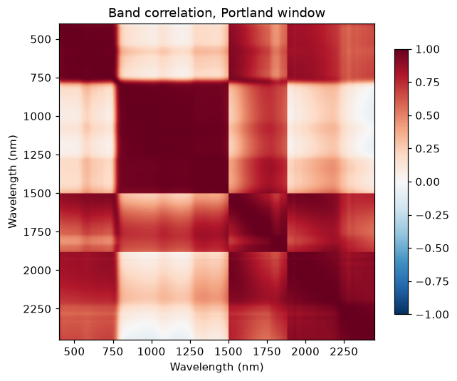
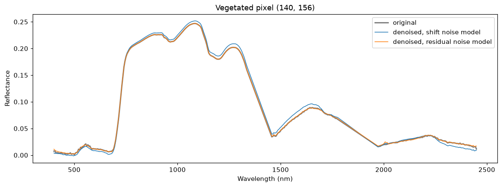
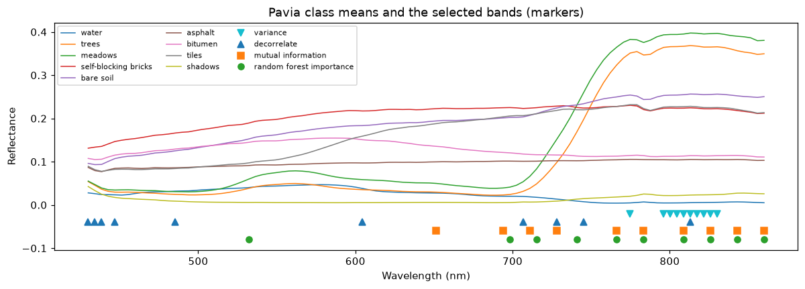

Four hundred bands do not carry four hundred independent pieces of information. Neighbouring bands are almost perfectly correlated, and most of a scene’s spectral variety lives in a handful of directions. This notebook measures that redundancy, compresses Tanager and Pavia cubes with PCA, MNF and ICA, denoises a cube by keeping only its signal components, estimates how many components are really needed with HySime and virtual dimensionality, and picks small band subsets that keep a classifier almost as accurate as with all bands.
Overview
Why reduce dimensions
Redundancy: with 5 nm sampling, adjacent bands correlate above 0.99 over most of the spectrum. Storage, computation and many algorithms scale with the number of bands.
The Hughes phenomenon: with a fixed number of training samples, classifier accuracy first rises and then falls as features are added, because covariance and decision boundaries become poorly estimated in high dimensions.
Noise: a few components hold the signal; the rest is mostly noise. Separating them denoises.
Endmembers and detection (notebooks 09_05_07 and 09_05_08) work in a signal subspace whose size must be estimated.
Feature extraction
Principal component analysis (PCA) rotates the data onto orthogonal axes of decreasing variance. It ranks components by variance, not by quality, so a noisy but bright band can dominate.
Minimum noise fraction (MNF) (Green et al. 1988) first whitens the noise, using a noise covariance estimated from neighbouring pixel differences, and then applies PCA. Components are ordered by signal to noise ratio; the eigenvalue minus one is the SNR of each component. Inverting with only the leading components gives a denoised cube.
Independent component analysis (ICA) finds statistically independent, non Gaussian sources, which sometimes isolate single materials better than PCA.
Intrinsic dimension
HySime (Bioucas-Dias and Nascimento 2008) estimates the noise by spectral regression and keeps the eigenvectors whose signal power exceeds the noise power.
Virtual dimensionality (VD) (Harsanyi, Farrand and Chang) counts the eigenvalues of the correlation matrix that are significantly larger than those of the covariance matrix: each such pair indicates a distinct signal source.
Band selection
Feature extraction mixes all bands into new variables; band selection keeps a subset of the original bands, which stays physically interpretable and can guide the design of cheaper sensors. Unsupervised criteria use variance or redundancy; supervised criteria use class labels (mutual information, ANOVA F, random forest importance). A minimum spectral separation avoids picking neighbours that carry the same information.
Dimensionality Reduction with GeoLattice
hs.pca, hs.mnf and hs.ica return a scores cube (component, y, x) and a fitted transform whose components, eigenvalues and explained_ratio describe the rotation; transform and inverse_transform apply it to other cubes. hs.mnf_denoise, hs.hysime, hs.virtual_dimensionality and hs.select_bands complete the toolbox.
Learning objectives
Quantify band to band correlation in a hyperspectral cube.
Compute PCA and MNF, interpret explained variance, SNR and component images.
Denoise a cube with hs.mnf_denoise and measure the effect.
Estimate the intrinsic dimension with HySime and virtual dimensionality.
Select informative bands, with and without labels, and compare their classification accuracy with all bands and with PCA and MNF features.
Data
Dataset
Use
Tanager urban scene (Portland), 300 by 300 pixel window
Pavia Centre (ROSIS, 102 bands) with its 9 class ground truth (Pavia/Pavia_gt.mat)
Intrinsic dimension, band selection and classification
Contents
Setup
How redundant are the bands?
Principal component analysis
Minimum noise fraction
Denoising with MNF
Independent components
How many components?
Band selection and classification
Summary and exercises
Setup
Installation. This notebook needs installation option 5 (core, spatial analysis, spatial statistics, geostatistics and remote sensing): pip install "geolattice[remote-sensing]". See “Installation options” in the GeoLattice README.
Code
import warnings # warning controlwarnings.filterwarnings("ignore") # hide routine library warningsfrom pathlib import Path # file pathsimport numpy as np # arraysimport pandas as pd # tablesimport matplotlib.pyplot as plt # figuresimport geolattice # GeoLatticefrom geolattice.rsense import hyperspectral as hs # hyperspectral cubes, readers and toolsplt.rcParams.update({"figure.dpi": 110}) # figure resolutionDATA = Path("../../../../Data/08_remote_sensing/08_05_HyperSpectral") # data folder next to this notebookTANAGER = DATA /"Tanger"# Planet Tanager sample scenesOUT = Path("outputs") # results written by this notebookOUT.mkdir(exist_ok=True) # create it if neededdef tanager_file(category, product="sr"):"""Path of a Tanager product (sr or radiance) for a scene category folder."""returnnext((TANAGER / category).glob(f"*/*_ortho_{product}_hdf5.h5"))print("GeoLattice", geolattice.__version__) # library version used for this notebookimport scipy.io # read the Pavia ground truth (.mat)from sklearn.ensemble import RandomForestClassifier # classifier for the band selection testfrom sklearn.metrics import accuracy_score, cohen_kappa_score # accuracy measuresfrom geolattice.rsense.dl.hyperspectral import block_split # spatially blocked train/test split
GeoLattice 0.3.49
How redundant are the bands?
Code
urban = hs.read_tanager(tanager_file("urban"), window=(slice(319, 619), slice(285, 585))) # Portland, 9 x 9 kmurban = hs.drop_bad_bands(urban) # remove water vapour windows and noisy endsprint(urban.shape)X = urban.values.reshape(urban.sizes["band"], -1).T # (pixels, bands)X = X[np.all(np.isfinite(X), axis=1)] # valid pixelsC = np.corrcoef(X, rowvar=False) # band to band correlation matrixwl = hs.wavelengths(urban)neighbour = np.diag(C, 1) # correlation of each band with the nextprint(f"adjacent band correlation: median {np.median(neighbour):.4f}, minimum {neighbour.min():.4f} at {wl[np.argmin(neighbour)]:.0f} nm")fig, ax = plt.subplots(figsize=(6.5, 5.5))im = ax.imshow(C, cmap="RdBu_r", vmin=-1, vmax=1, extent=[wl[0], wl[-1], wl[-1], wl[0]])ax.set(xlabel="Wavelength (nm)", ylabel="Wavelength (nm)", title="Band correlation, Portland window")plt.colorbar(im, ax=ax, shrink=0.8)plt.show()
(350, 300, 300)
adjacent band correlation: median 0.9994, minimum 0.5683 at 1337 nm

The correlation matrix is made of large blocks: the visible, the NIR plateau and the SWIR each behave almost as one variable, and adjacent bands correlate above 0.99 nearly everywhere. The weakest links between neighbours are next to the removed absorption windows.
Principal component analysis
Code
pc, pca_t = hs.pca(urban, 20) # first 20 principal componentscum = np.cumsum(pca_t.explained_ratio) # cumulative explained varianceprint("explained variance of PC1 to PC5:", np.round(pca_t.explained_ratio[:5], 4))print("components for 99% and 99.9%:", int(np.searchsorted(cum, 0.99) +1), int(np.searchsorted(cum, 0.999) +1))fig, axes = plt.subplots(1, 2, figsize=(13, 4))axes[0].semilogy(np.arange(1, 21), pca_t.explained_ratio[:20], "o-")axes[0].set(xlabel="Component", ylabel="Explained variance ratio", title="PCA scree plot")for k inrange(4): axes[1].plot(wl, pca_t.components[k], label=f"PC{k +1}")axes[1].set(xlabel="Wavelength (nm)", ylabel="Loading", title="PCA loadings"); axes[1].legend()plt.tight_layout()plt.show()
explained variance of PC1 to PC5: [0.6667 0.2845 0.0379 0.0064 0.0013]
components for 99% and 99.9%: 4 12
The first component is overall brightness (its loadings have one sign everywhere) and the second contrasts visible and NIR, which separates vegetation from built surfaces. Together the first few components hold more than 99 percent of the variance. Higher components carry less and less structure and more speckle and striping, but because PCA ranks by variance, real but faint features and noise are mixed in the same components.
Minimum noise fraction
hs.mnf estimates the noise covariance from neighbouring pixel differences, whitens it, and orders the components by SNR.
MNF components are ordered by SNR rather than by variance, and the result here is instructive. The first three components are smooth, large scale patterns with very high SNR: the shift difference noise model sees almost no pixel to pixel change in them, so they look noise free, whatever their origin (residual atmospheric gradients or smooth land cover trends). The street grid and the parks appear from MNF4 on, and the late components show diagonal striping and speckle. The catch is that the shift difference method estimated “noise” from neighbouring pixels, and in a city most of the difference between neighbouring 30 m pixels is real texture. MNF then rates much of the urban detail as noise. The next section shows the consequence.
Denoising with MNF
hs.mnf_denoise(cube, k) transforms to MNF space, keeps the first k components and transforms back. It is run with both noise models: the default shift difference and the spectral residual model (noise="residual"), which estimates noise from each band’s spectral neighbours and is not fooled by spatial texture. Noise is measured before and after with the residual method from notebook 09_05_02, and the reconstruction error shows how much real signal each version removes.
Code
n0 = hs.estimate_noise(urban, method="residual") # per band noise beforeversions = {"shift noise model": hs.mnf_denoise(urban, 20), # default noise model"residual noise model": hs.mnf_denoise(urban, 20, noise="residual")}rows = []for name, den in versions.items(): rows.append({"MNF denoising (20 components)": name,"median noise before": np.median(n0),"median noise after": np.median(hs.estimate_noise(den, method="residual")),"RMS change to the cube": float(np.sqrt(np.nanmean((den.values - urban.values) **2)))})display(pd.DataFrame(rows).set_index("MNF denoising (20 components)").round(5))G, N = hs.band_at(urban, 560).values, hs.band_at(urban, 860).values # pick a vegetated pixelr, c = np.unravel_index(np.nanargmax((N - G) / (N + G)), N.shape)fig, ax = plt.subplots(figsize=(13, 4.2))ax.plot(wl, urban.values[:, r, c], lw=2, color="0.5", label="original")for name, den in versions.items(): ax.plot(wl, den.values[:, r, c], lw=1, label=f"denoised, {name}")ax.set(xlabel="Wavelength (nm)", ylabel="Reflectance", title=f"Vegetated pixel ({r}, {c})"); ax.legend()plt.show()
median noise before
median noise after
RMS change to the cube
MNF denoising (20 components)
shift noise model
0.00095
0.00013
0.02038
residual noise model
0.00095
0.00011
0.00124

Both versions lower the band to band noise, but only the residual model keeps the signal. With the shift difference model the cube changes by about 0.02 in reflectance on average, far more than the noise itself (about 0.001): real urban detail rated as “noise” has been thrown away. Even this vegetated pixel, an easy case, is shifted away from the original in the NIR and SWIR, and darker or mixed pixels change much more. With the residual model the change is about the size of the noise, and the denoised spectrum follows the original without its jitter. MNF is only as good as its noise estimate: the classic shift difference model suits smooth scenes, while textured scenes (cities, mixed agriculture) need a spectral noise model. The choice of k matters too: keep somewhat more components than the intrinsic dimension estimated below, or rare materials are lost.
ICA components have no natural order. Some of them pick out a single kind of surface (water, vegetation, particular roofs) more cleanly than any PCA component, because ICA looks for sparse, non Gaussian sources rather than for directions of maximum variance. They are useful features for classification and for finding rare targets.
How many components?
The Pavia Centre cube and its ground truth are loaded here for this and the next section. The 9 classes follow the dataset documentation.
rows = []for name, cube in [("Tanager Portland", urban), ("Pavia Centre", pavia)]: hy = hs.hysime(cube, sample=50_000) # signal subspace by HySime _, t = hs.pca(cube, 30, sample=50_000) rows.append({"cube": name, "bands": cube.sizes["band"], "HySime k": hy["k"],"VD (alpha 1e-3)": hs.virtual_dimensionality(cube, sample=50_000),"PCA 99%": int(np.searchsorted(np.cumsum(t.explained_ratio), 0.99) +1),"PCA 99.9%": int(np.searchsorted(np.cumsum(t.explained_ratio), 0.999) +1)})pd.DataFrame(rows)
cube
bands
HySime k
VD (alpha 1e-3)
PCA 99%
PCA 99.9%
0
Tanager Portland
350
29
29
4
12
1
Pavia Centre
102
59
10
3
13
The estimates disagree, and that is typical. Variance thresholds count how many components describe the data’s spread, which says little about how many distinct materials there are. HySime and VD are statistical tests whose answer depends on the noise model and on the number of pixels; with tens of thousands of pixels they find many components significant. Treat them as ranges, not exact answers: here, a few to a few tens of components describe each scene. Notebook 09_05_07 uses such an estimate to choose the number of endmembers.
Band selection and classification
How much is lost by keeping only ten bands? A random forest is trained on Pavia with all 102 bands, with ten bands chosen in four ways, and with the first ten PCA and MNF components. Training and test pixels come from different 32 by 32 pixel blocks (block_split), so neighbouring pixels never sit on both sides; a random pixel split would inflate the accuracy.
Code
train, test = block_split(gt, block=32, test_fraction=0.4, seed=0) # spatially separate pixel setsrng = np.random.default_rng(0)tr_idx = rng.choice(np.flatnonzero(train.ravel()), 6000, replace=False) # 6000 training pixelste_idx = np.flatnonzero(test.ravel()) # all test pixelsXall = pavia.values.reshape(pavia.sizes["band"], -1).T # (pixels, bands)y = gt.ravel()print("train pixels", len(tr_idx), "| test pixels", len(te_idx), "| test classes", np.unique(y[te_idx]).size)Xtr = pd.DataFrame(Xall[tr_idx], columns=np.round(hs.wavelengths(pavia), 1)) # labelled training spectraselections = {"variance": hs.select_bands(pavia, n=10, method="variance"),"decorrelate": hs.select_bands(pavia, n=10, method="decorrelate"),"mutual information": hs.select_bands(Xtr, y[tr_idx], n=10, method="mutual_info", min_separation_nm=15),"random forest importance": hs.select_bands(Xtr, y[tr_idx], n=10, method="rf", min_separation_nm=15),}pd.DataFrame({k: v["wavelength"].round(0).to_numpy() for k, v in selections.items()})
train pixels 6000 | test pixels 56425 | test classes 9
variance
decorrelate
mutual information
random forest importance
0
813.0
813.0
860.0
783.0
1
809.0
485.0
843.0
860.0
2
800.0
728.0
809.0
843.0
3
805.0
430.0
826.0
809.0
4
817.0
439.0
783.0
715.0
5
796.0
605.0
711.0
698.0
6
822.0
745.0
766.0
826.0
7
830.0
434.0
728.0
532.0
8
826.0
447.0
694.0
741.0
9
775.0
707.0
651.0
766.0
Code
pc_p, _ = hs.pca(pavia, 10) # 10 principal componentsmnf_p, _ = hs.mnf(pavia, 10) # 10 MNF componentsfeatures = {"all 102 bands": Xall}features.update({f"10 bands: {k}": Xall[:, v["band"].to_numpy()] for k, v in selections.items()})features["10 PCA components"] = pc_p.values.reshape(10, -1).Tfeatures["10 MNF components"] = mnf_p.values.reshape(10, -1).Trows = []for name, F in features.items(): rf = RandomForestClassifier(300, n_jobs=-1, random_state=0).fit(F[tr_idx], y[tr_idx]) # train pred = rf.predict(F[te_idx]) # predict the held-out blocks rows.append({"features": name, "overall accuracy": accuracy_score(y[te_idx], pred),"kappa": cohen_kappa_score(y[te_idx], pred)})res = pd.DataFrame(rows).set_index("features").round(3)res
overall accuracy
kappa
features
all 102 bands
0.955
0.940
10 bands: variance
0.801
0.729
10 bands: decorrelate
0.946
0.927
10 bands: mutual information
0.930
0.906
10 bands: random forest importance
0.951
0.935
10 PCA components
0.962
0.950
10 MNF components
0.967
0.956
Code
fig, ax = plt.subplots(figsize=(13, 4))mean_by_class = [np.nanmean(Xall[y == k], axis=0) for k inrange(1, 10)] # class mean spectrafor k, s inenumerate(mean_by_class): ax.plot(hs.wavelengths(pavia), s, lw=1, label=NAMES[k])for (name, sel), m inzip(selections.items(), ["v", "^", "s", "o"]): ax.plot(sel["wavelength"], np.full(len(sel), -0.02-0.02*list(selections).index(name)), m, ms=6, label=name)ax.set(xlabel="Wavelength (nm)", ylabel="Reflectance", title="Pavia class means and the selected bands (markers)")ax.legend(fontsize=7, ncol=3)plt.show()

Ten PCA or MNF components classify the held-out blocks slightly better than all 102 bands (overall accuracy about 0.96 to 0.97 against 0.955), and ten bands chosen by decorrelation or random forest importance come within one point of all bands. Mutual information is a little lower because it picks mostly correlated bands on the red edge and NIR plateau. The variance criterion fails (about 0.80): all ten of its bands sit side by side on the bright NIR plateau, where classes spread most but carry the same information. Decorrelation spreads its picks across the blue, the red and the red edge, and the random forest adds a green band, which is why both work well. With this many training pixels the Hughes effect is small for a random forest; it matters more for parametric classifiers and small training sets.
Summary and exercises
Key points
Adjacent hyperspectral bands are almost perfectly correlated; the spectrum behaves like a few blocks of variables.
PCA concentrates variance in a few components but ranks noise and signal together; MNF ranks by SNR, but only as well as its noise model allows.
In textured scenes the shift difference noise model treats real detail as noise; MNF denoising with the spectral residual model removes band to band noise and keeps the signal.
Intrinsic dimension estimates (HySime, VD, variance thresholds) disagree; use them as ranges.
A few bands or components retain nearly all the class information; supervised selection with a spectral separation gives interpretable subsets.